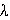
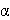

Figure 3. Mimicry and the palatability spectrum.
The effects of assumptions about learning and forgetting on number-
and frequency-dependent selection. Equilibrated attack rates at varying
mimic densities are shown for model alone, mimic alone, and model-mimic
pair. Comparisons of attack rate clearly demonstrate whether mimic, model,
or both benefit from the association (115) (the mimic is here considered
by convention to be the more palatable species). In all panels, the model
density is a constant set at 1.6 (115). These assumptions (71, 115,148-149,
151, 166) can reproduce classical parasitic Batesian mimicry (panel A; Mo=0.2, Mi=1, Mo=0.3, Mi=0.0)
and mutualistic Müllerian mimicry (D; Mo=0.2, Mi=0.2, Mo=0.3, Mi=0.3),
but they also produce intermediate types of mimicry, including parasitic
quasi-Batesian mimicry between pairs of unpalatable species (B; Mo=0.2, Mi=0.6, Mo=0.3, Mi=0.5),
and a cusped quasi-Batesian/Müllerian combination (C; Mo=0.2, Mi=0.3, Mo=0.3, Mi=0.5).
The curves were generated from a general equation for attack rate equilibrium
at particular density (115, 149). Note that Owen and Owen's own figures
are sketches only, and contain some incorrect features (149).